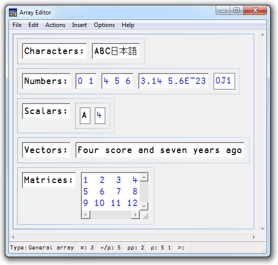

The Array Editor1 allows you to edit arbitrary arrays. It is invoked by either:
The Array Editor draws data using a format that is similar to the output of the DISPLAY function. For example:

Full documentation for the Array Editor, including a list of the keystrokes it uses, is available from the Help menu in the Array Editor's window.
The Array Editor supports arrays that consist solely of characters and/or numbers. You may not use it to edit an array that contains an object reference or a ⎕OR.
The way that the Arrays Editor reacts to unsupported arrays is determined by the value of the Reject unsupported data option which is accessed by the Options/Reject unsupported data menu item on the Array Editor menubar.
If this is set to true (the default), and you try to edit an array containing an object reference, the Array Editor will refuse to start and the system will generate an error message.
⎕SE.NumEd.numed: Unexpected error in array editor:
DOMAIN ERROR Argument contained data that is
neither simple or nested.If this option is cleared, the Array editor will start but you will not be able to do anything. It is therefore advisable that you leave this option set.
The Array Editor is implemented by a DLL named dlaedit.dll (32-bit) or dlaedit64.dll (64-bit).
The DLL exports two functions: DyalogEditArray and DyalogEditArrayTitle. The latter is used when you click the the icon in the Session toolbar (via the APL function ⎕SE.NumEd.numed) and by the User Command ]aedit
If you wish to use the Array Editor directly, you may do so as follows using ⎕NA2.
For both DyalogEditArray and DyalogEditArrayTitle the first argument is the array to be edited, while the second argument is a place holder and should always be 0
For DyalogEditArrayTitle the 3rd argument is a character vector whose contents are displayed in the caption of the array editor window.
The result is the newly altered array.
⎕NA'dlaedit.dll|DyalogEditArray <pp >pp' ⍝ 32-bit
⎕NA'dlaedit.dll|DyalogEditArrayTitle <pp >pp <0C2[]' ⍝ 32-bit
⎕NA'dlaedit64.dll|DyalogEditArray <pp >pp' ⍝ 64-bit
⎕NA'dlaedit64.dll|DyalogEditArrayTitle <pp >pp <0C2[]'⍝ 64-bit
New←DyalogEditArray Old 0
New←DyalogEditArrayTitle Old 0 Name